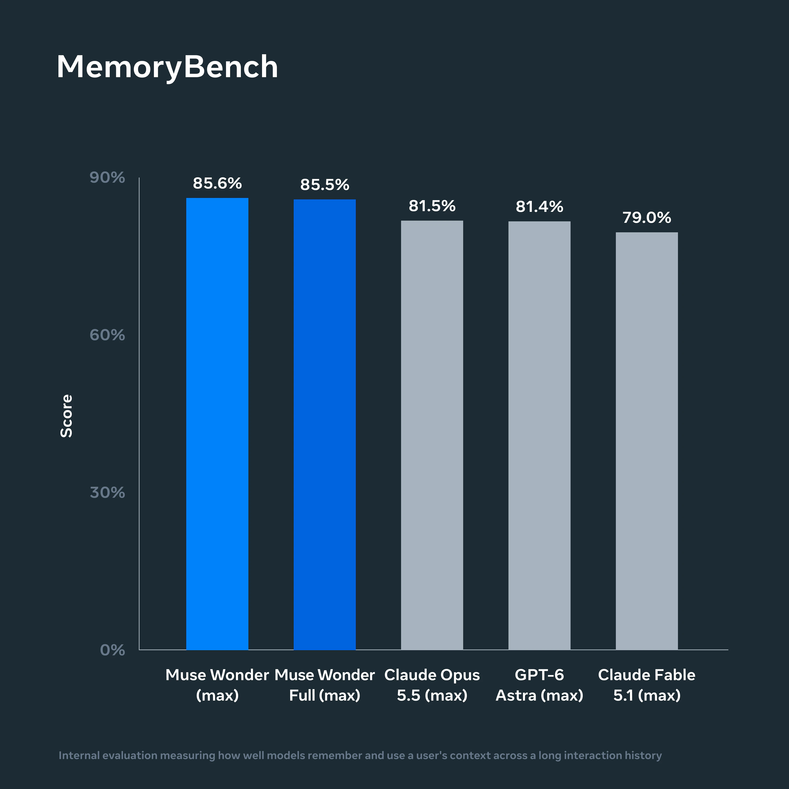
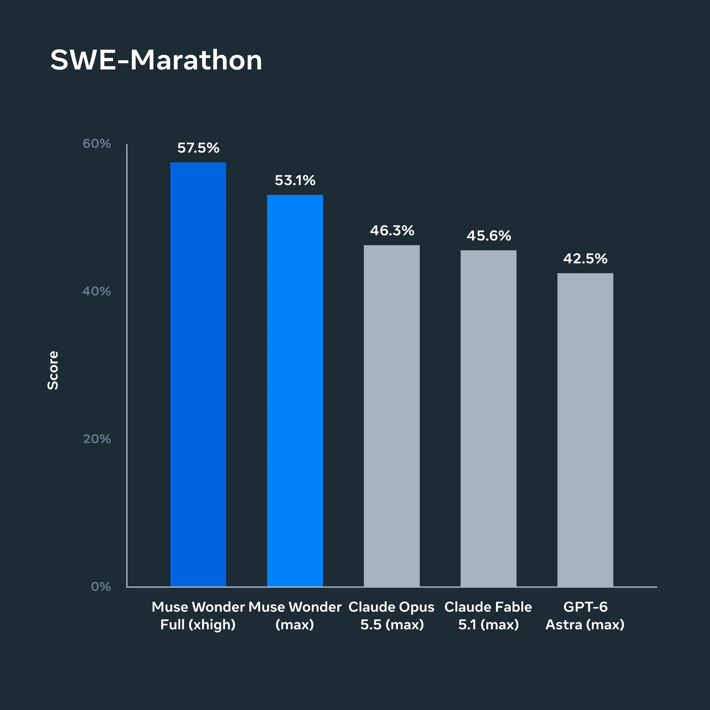
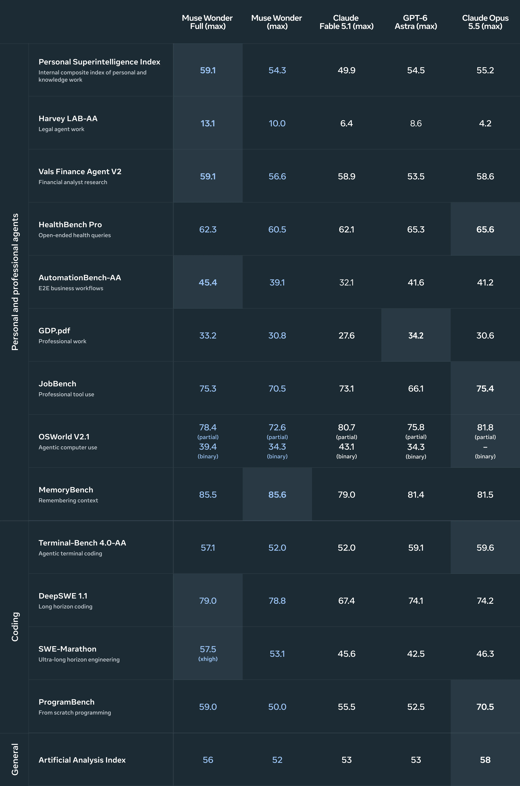
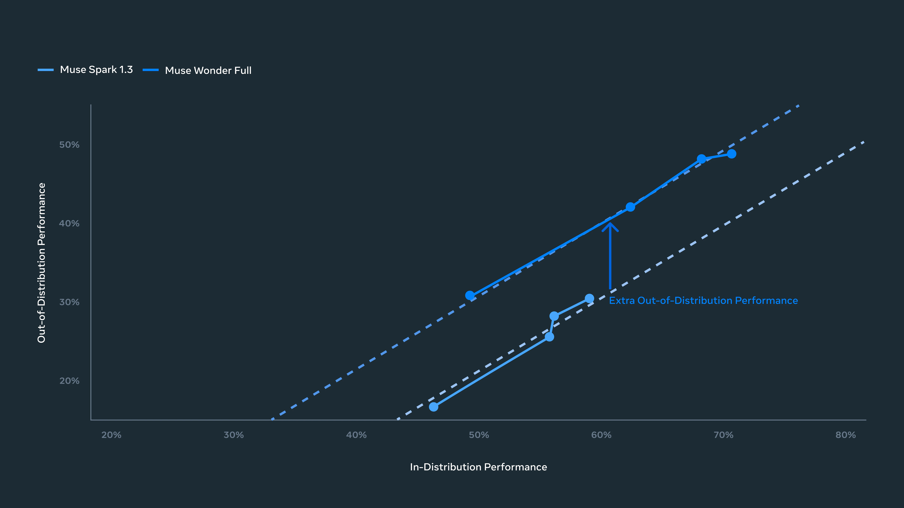
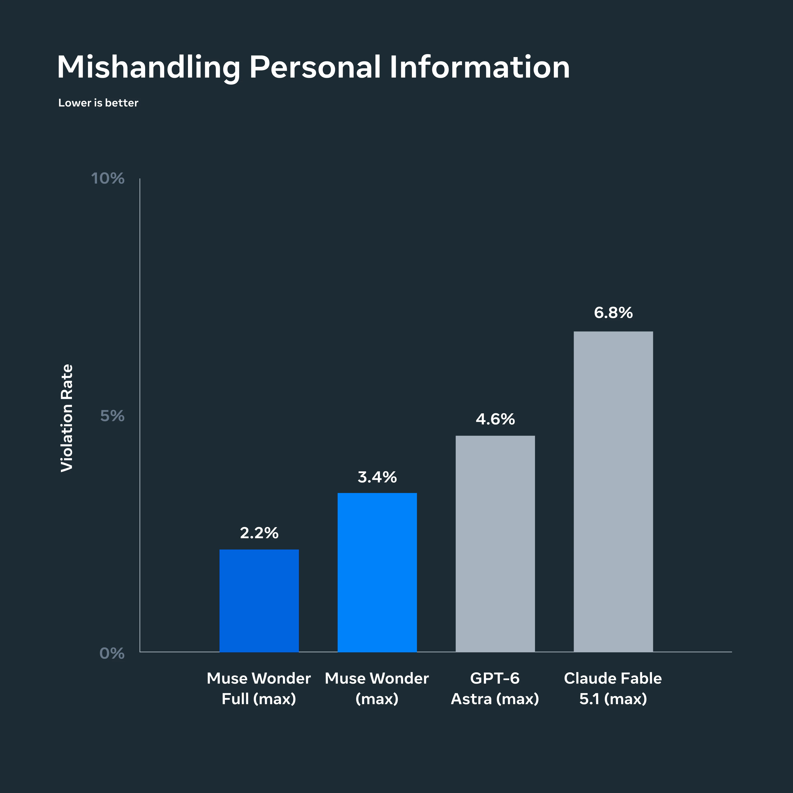

Muse Wonder Family

首发、Family 和访问边界
官方文章标注 2026-10-12 并说明当天 Wonder 可通过 Meta Model API 和 Muse Code 使用，Wonder Full 可供 Muse Code 订阅者使用。两者作为同一新主干 family 合并，不能按服务版本拆成两个正代。Muse 消费端的逐步接入是后续 rollout，不是另一条模型首发。
该团队不只维护 Llama：Atlas 的 Meta 分支需要容纳 Muse。它不是 Llama 5 的别名，也不能继承 Llama 权重开放与许可的假设。博客称构建更大、更强的 base，并在 Prometheus 数据中心训练；未给出可核验的具体参数或 FLOPs。
Memory：不是保存更多文本，而是取回当前任务相关的材料
Active Memory 的公开定义是跨对话保留重要上下文，并在新任务中主动找回相关细节。实现可以涉及存储、检索、选择和上下文编排，但博客没有披露哪部分在模型内部、哪部分属于服务/Harness，不能直接写成“参数化永久记忆”。
核心失败类别至少包括：没有检索到旧约束、取回过期事实、错配同名实体、忘记用户撤销的授权，以及把私人信息带给不应该看见的工具。记忆准确率提高与隐私风险下降必须分别测。
Focus：长期保持目标，并不意味着无条件不停执行

官方以 FocusBench 与 SWE-Marathon 测持续执行。Focus 指在难目标上尝试替代路线、应对阻碍、根据新信息调整，同时在必要处澄清、重大行动前确认。它包含“坚持”也包含“知道何时停下”，不是绕过失败、权限或用户撤销。
长期软件工程需要保存需求、修改多文件、重复测试与修订；这与一次函数生成的 pass@1 不同。公开博客说训练含多样长程任务，却没有披露任务构造、过程奖励、信用分配或恢复策略。不能把这些常见技术名词自动填为已证实的方法。
官方成绩：强项与非领先项一起记录
下表选取官方完整图中的关键行，未本地复现。默认比较列标 max；SWE-Marathon 的 Wonder Full 标 xhigh，预算并不严格相同。
| 评测 | Wonder Full | Wonder | GPT-6 Astra | Claude Opus 5.5 |
|---|---|---|---|---|
| Personal Superintelligence Index | 59.1 | 54.3 | 54.5 | 55.2 |
| Harvey LAB-AA | 13.1 | 10.0 | 8.6 | 4.2 |
| Vals Finance Agent V2 | 59.1 | 56.6 | 53.5 | 58.6 |
| MemoryBench | 85.5 | 85.6 | 81.4 | 81.5 |
| AutomationBench-AA | 45.4 | 39.1 | 41.6 | 41.2 |
| DeepSWE 1.1 | 79.0 | 78.8 | 74.1 | 74.2 |
| SWE-Marathon | 57.5（xhigh） | 53.1 | 42.5 | 46.3 |
| Terminal-Bench 4.0-AA | 57.1 | 52.0 | 59.1 | 59.6 |
| HealthBench Pro | 62.3 | 60.5 | 65.3 | 65.6 |
| Artificial Analysis Index | 56 | 52 | 53 | 58 |
Full 在长程工程与内部综合指数上强，但 Terminal、HealthBench、AA Index 并非最高；普通 Wonder 在不少项也低于对手。MemoryBench 85.5/85.6 的小差异不能据此断言 Full 记忆更差，缺少不确定性与重复试验。
LAB-AA 不能与 GLM-Legal 的 Harvey LAB 19.2 直接比较；不同供应商图上的 harness、effort、token budget 与版本可能不同。“双方都有一个法律 benchmark”不等于实验条件相同。

泛化证据怎样理解

横轴是后训练重点任务的综合分，纵轴是没有针对训练的任务平均分；每点对应不同 reasoning effort。Wonder Full 相对 Spark 1.3 的趋势向上移，是官方用于论证更强 base 带来有效稳健性的证据。
这仍是观察性比较：base、后训练、harness 和任务集合同时可能变化。不能由曲线推出“训练了某种特定 RL 就造成 OOD 改善”，也不能把没有针对训练等同于完全无污染。
安全：防泄露与合法任务成功不能互相替代

个人 Agent 可访问消息、日历、私人文档，因此评测要同时处理不可信指令、未经授权动作和私人信息泄露。官方还展示 CBRN/cyber misuse 拒绝与 defensive cyber compliance，不能用拒绝所有任务来取得“安全”。博客说额外安全评估完整报告将后续提供；不能写成该报告已公开且本笔记已读。
来源地图
- Tech Blog · 10 月 12 日首发
- Official Model Card / Evaluation Report · 链接保留，全文未精读
src/tech_blog.html与正文提取保留原文；16 张官方静态图位于src/assets/，不抓演示视频。
📊 相关可视化: Muse Wonder 中文 Poster